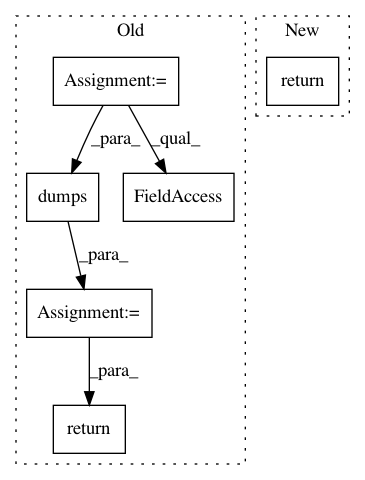

afadb6b3193224c40ffb76496e1aa14567b3dcb4,syft/grid/clients/data_centric_fl_client.py,DataCentricFLClient,simplify,#Any#Any#,288
Before Change
// Simplify the attributes for DataCentricFLClient
address = json.dumps(data_centric_fl_client.address)
id = json.dumps(data_centric_fl_client.id)
is_client_worker = json.dumps(data_centric_fl_client.is_client_worker)
log_msgs = json.dumps(data_centric_fl_client.log_msgs)
verbose = json.dumps(data_centric_fl_client.verbose)
encoding = json.dumps(data_centric_fl_client.encoding)
timeout = json.dumps(data_centric_fl_client.timeout)
return (address, id, is_client_worker, log_msgs, verbose, encoding, timeout)
@staticmethod
def detail(worker: AbstractWorker, client_tuple: tuple) -> "DataCentricFLClient":
After Change
@staticmethod
def simplify(_worker: AbstractWorker, worker: "VirtualWorker") -> tuple:
return BaseWorker.simplify(_worker, worker)
@staticmethod
def detail(worker: AbstractWorker, worker_tuple: tuple) -> Union["VirtualWorker", int, str]:
detailed = BaseWorker.detail(worker, worker_tuple)
In pattern: SUPERPATTERN
Frequency: 3
Non-data size: 6
Instances
Project Name: OpenMined/PySyft
Commit Name: afadb6b3193224c40ffb76496e1aa14567b3dcb4
Time: 2020-08-21
Author: 2017csb1092@iitrpr.ac.in
File Name: syft/grid/clients/data_centric_fl_client.py
Class Name: DataCentricFLClient
Method Name: simplify
Project Name: ray-project/ray
Commit Name: 5cfa1934e4a2157d07ef534e1033a3f0e5bc1082
Time: 2020-12-18
Author: me@barakmich.com
File Name: python/ray/experimental/client/server/server.py
Class Name: RayletServicer
Method Name: PutObject
Project Name: ray-project/ray
Commit Name: 5cfa1934e4a2157d07ef534e1033a3f0e5bc1082
Time: 2020-12-18
Author: me@barakmich.com
File Name: python/ray/experimental/client/server/server.py
Class Name: RayletServicer
Method Name: GetObject